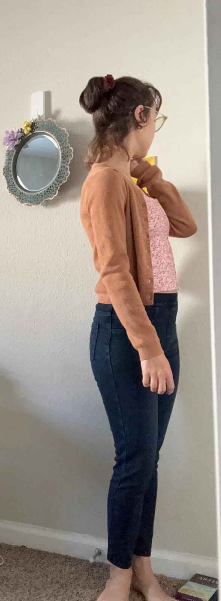

Three Ways to Style It

Parisian Light
1. Parisian Light
Layer under a merino blazer with jean leggins and sneakers for a sporty outing. Add minimal gold jewelry.

90s Cool
2. 90s Cool
Straight-leg jeans moderate the sportiness towards a more relaxed casual idea. Contrast pastels with gray monochrome. Finish with a claw clip.

Soft Layering
3. Soft Layering
Style under a sheer cardigan with a maxi skirt and ballet flats. Add a soft tote for texture.